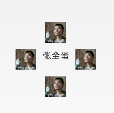
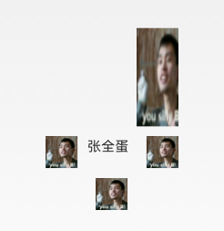
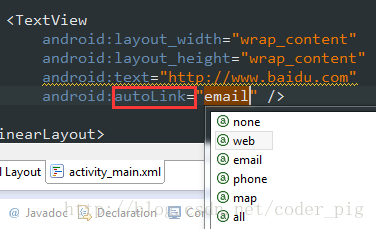
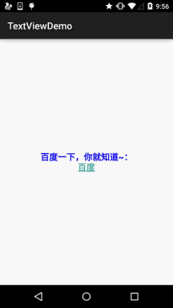

); Reset the drawable array for the TextView! If there is no image, you can use null instead! PS: In addition, from the above we can see that we can also directly call setCompoundDrawables in Java code to set images for TextView!
Learning the six major layouts in Android, starting from this section we will explain the UI controls in Android one by one. The UI control brought to you in this section is: TextView (text box), a control used to display text. Also, let me clarify that I am not translating the API documentation, and I won't go over each attribute one by one; I only learn the commonly used and useful ones in actual development. If you encounter attributes you feel unfamiliar with, you can check the corresponding API! Of course, at the beginning of each section, a link to the API documentation for that section will be posted:TextView APIOkay, before starting the content of this section, let me first introduce a few units:
dp(dip):device independent pixels. Different devices have different display effects, and this is related to device hardware. Generally, in order to support WVGA, HVGA, and QVGA, we recommend using this, as it does not depend on pixels.px: pixelsDifferent devices have the same display effect. Generally, we use HVGA to represent 320x480 pixels, and this is used more often.pt: pointis a standard unit of length. 1pt = 1/72 inch, used in the printing industry, very simple and easy to use;sp: scaled pixelsMainly used for font display, best for text size.
1. Basic Properties Explained in Detail:
Through the following simple interface, let's understand a few of the most basic properties:

Layout code:
<RelativeLayout xmlns:android="http://schemas.android.com/apk/res/android"
xmlns:tools="http://schemas.android.com/tools"
android:layout_width="match_parent"
android:layout_height="match_parent"
tools:context=".MainActivity"
android:gravity="center"
android:background="#8fffad">
<TextView
android:id="@+id/txtOne"
android:layout_width="200dp"
android:layout_height="200dp"
android:gravity="center"
android:text="TextView(显示框)"
android:textColor="#EA5246"
android:textStyle="bold|italic"
android:background="#000000"
android:textSize="18sp" />
</RelativeLayout>
The TextView above has the following properties:
- id：Set a component id for the TextView. Based on the id, we can obtain the object in Java code through the findViewById() method, and then set related properties. Or, when using RelativeLayout, the id is also used to reference components!
- layout_width：The width of the component is generally written as **wrap_content** or **match_parent (fill_parent)**. The former means the control is as large as the content it displays, while the latter will fill the parent container of the control; of course, you can also set it to a specific size, for example, here I set it to 200dp for display purposes.
- layout_height：The height of the component, same as above.
- gravity：Set the alignment direction of the content within the control. In TextView it is text, in ImageView it is an image, and so on.
- text：Set the displayed text content. Generally, we write strings into the string.xml file, and then obtain the corresponding string content through @String/xxx. Here, for convenience, I wrote it directly in "", but it is not recommended to write it like this!!!
- textColor：Set the font color. Same as above, reference it through the colors.xml resource. Don't write it directly like this!
- textStyle：Set the font style. Three optional values: **normal** (no effect), **bold** (bold), **italic** (italic)
- textSize：Font size, the unit is generally sp!
- background：The background color of the control can be understood as the color filling the entire control; it can also be an image!
2. Practical Development Examples
2.1 TextView with Shadow
Several properties involved:
- android:shadowColor:Set the shadow color. It needs to be used together with shadowRadius!
- android:shadowRadius:Set the blur level of the shadow. Setting it to 0.1 turns it into the font color; it is recommended to use 3.0.
- android:shadowDx:Set the horizontal offset of the shadow, that is, the x-coordinate position where the shadow starts in the horizontal direction.
- android:shadowDy:Set the vertical offset of the shadow, that is, the y-coordinate position where the shadow starts in the vertical direction.
Effect image:

Implementation code:
<TextView
android:layout_width="wrap_content"
android:layout_height="wrap_content"
android:layout_centerInParent="true"
android:shadowColor="#F9F900"
android:shadowDx="10.0"
android:shadowDy="10.0"
android:shadowRadius="3.0"
android:text="带阴影的TextView"
android:textColor="#4A4AFF"
android:textSize="30sp" />
2.2 TextView with Border:
If you want to set a border background for TextView, a normal rectangular border or a rounded-corner border! The following may help you! In addition, TextView is the parent class of many other controls, such as Button, and you can also set such a border for them! The implementation principle is very simple: write a ShapeDrawable resource file yourself! Then set the TextView's background to this drawable resource!
Briefly explain the nodes and attributes of the shapeDrawable resource file:
- <solidandroid:color = "xxx"> This is for setting the background color.
- <strokeandroid:width = "xdp" android:color="xxx"> This is for setting the thickness of the border and the color of the border.
- <paddingandroid:bottom = "xdp"...> This is for setting the margins.
- <cornersandroid:topLeftRadius="10px"...> This is for setting rounded corners.
- <gradient> This is for setting the gradient color. The optional attributes are:startColor: start colorendColor: end colorcenterColor: middle colorangle: direction angle. When it is 0, the gradient goes from left to right, then rotates counterclockwise; when angle = 90 degrees, it goes from bottom to top.type: set the gradient type
Implementation effect image:

Code implementation:
Step 1: Write the Drawable for the rectangular border:
<?xml version="1.0" encoding="utf-8"?>
<shape xmlns:android="http://schemas.android.com/apk/res/android" >
<!-- 设置一个黑色边框 -->
<stroke android:width="2px" android:color="#000000"/>
<!-- 渐变 -->
<gradient
android:angle="270"
android:endColor="#C0C0C0"
android:startColor="#FCD209" />
<!-- 设置一下边距,让空间大一点 -->
<padding
android:left="5dp"
android:top="5dp"
android:right="5dp"
android:bottom="5dp"/>
</shape>
Step 2: Write the Drawable for the rounded rectangle border:
<?xml version="1.0" encoding="utf-8"?>
<shape xmlns:android="http://schemas.android.com/apk/res/android">
<!-- 设置透明背景色 -->
<solid android:color="#87CEEB" />
<!-- 设置一个黑色边框 -->
<stroke
android:width="2px"
android:color="#000000" />
<!-- 设置四个圆角的半径 -->
<corners
android:bottomLeftRadius="10px"
android:bottomRightRadius="10px"
android:topLeftRadius="10px"
android:topRightRadius="10px" />
<!-- 设置一下边距,让空间大一点 -->
<padding
android:bottom="5dp"
android:left="5dp"
android:right="5dp"
android:top="5dp" />
</shape>
Step 3: Set the TextView's background property to the above two Drawables:
<LinearLayout xmlns:android="http://schemas.android.com/apk/res/android"
xmlns:tools="http://schemas.android.com/tools"
android:layout_width="match_parent"
android:layout_height="match_parent"
android:background="#FFFFFF"
android:gravity="center"
android:orientation="vertical"
tools:context=".MainActivity">
<TextView
android:id="@+id/txtOne"
android:layout_width="200dp"
android:layout_height="64dp"
android:textSize="18sp"
android:gravity="center"
android:background="@drawable/txt_rectborder"
android:text="矩形边框的TextView" />
<TextView
android:id="@+id/txtTwo"
android:layout_width="200dp"
android:layout_height="64dp"
android:layout_marginTop="10dp"
android:textSize="18sp"
android:gravity="center"
android:background="@drawable/txt_radiuborder"
android:text="圆角边框的TextView" />
</LinearLayout>
2.3 TextView with Image (drawableXxx):
In actual development, we may encounter this requirement:
As shown in the figure, to achieve this effect, your idea might be: an ImageView to display the image + a TextView to display the text, then put them into a LinearLayout, then create four such small layouts in turn, and then put them into a large LinearLayout. The effect can be achieved, but isn't it a bit cumbersome? And as we said before, the fewer layout levels, the better the performance! Using drawableXxx can save the above process, and directly setting four TextViews can fulfill our requirement!
Basic usage:
The core of setting images is actually:drawableXxxYou can set images in four directions:drawableTop(top),drawableButtom(bottom),drawableLeft(left),drawableRight(right)drawablePaddingIn addition, you can also use
to set the spacing between the image and the text!Effect image

: (setting images in four directions)
<RelativeLayout xmlns:android="http://schemas.android.com/apk/res/android"
xmlns:tools="http://schemas.android.com/tools"
android:layout_width="match_parent"
android:layout_height="match_parent"
tools:context="com.jay.example.test.MainActivity" >
<TextView
android:layout_width="wrap_content"
android:layout_height="wrap_content"
android:layout_centerInParent="true"
android:drawableTop="@drawable/show1"
android:drawableLeft="@drawable/show1"
android:drawableRight="@drawable/show1"
android:drawableBottom="@drawable/show1"
android:drawablePadding="10dp"
android:text="张全蛋" />
</RelativeLayout>
Implementation code:Some issues:
You may find that the drawable we set in this way cannot set its size by itself, and it cannot be set directly in XML; so we need to make a modification in Java code!
package com.jay.example.test;
import android.app.Activity;
import android.graphics.drawable.Drawable;
import android.os.Bundle;
import android.widget.TextView;
public class MainActivity extends Activity {
private TextView txtZQD;
@Override
protected void onCreate(Bundle savedInstanceState) {
super.onCreate(savedInstanceState);
setContentView(R.layout.activity_main);
txtZQD = (TextView) findViewById(R.id.txtZQD);
Drawable[] drawable = txtZQD.getCompoundDrawables();
// 数组下表0~3,依次是:左上右下
drawable[1].setBounds(100, 0, 200, 200);
txtZQD.setCompoundDrawables(drawable[0], drawable[1], drawable[2],
drawable[3]);
}
}
The example code is as follows:

Running effect image:
- Code analysis: ① Drawable[] drawable = txtZQD.getCompoundDrawables( ); Obtain the image resources in four different directions. The array elements are, in order: left, top, right, bottom images.
- ② drawable
- ③ txtZQD.setCompoundDrawables(drawable
2.4 Using the autoLink Attribute to Identify Link Types
When URL, E-Mail, phone number, or map appears in the text, we can set the autoLink attribute; when we click the corresponding part of the text, we can jump to a default app, for example, a phone number, click it to jump to the dial interface!

Take a look at the effect diagram:

all means include everything, automatically recognize protocol headers~ In Java code, you can call setAutoLinkMask(Linkify.ALL); At this time, you don't need to write the protocol header, autolink will recognize it automatically, but you also need to set for this TextView: setMovementMethod(LinkMovementMethod.getInstance()); Otherwise, clicking will have no effect!
2.5 TextView and HTML
As the title suggests, in addition to displaying ordinary text, TextView also predefines some HTML-like tags. Through these tags, we can make TextView display different font colors, sizes, fonts, and even images or links! We just need to use some tags from HTML, plus the support of the android.text.HTML class, to accomplish the above functions!
PS: Of course, not all tags are supported; the commonly used ones are as follows:
- <font>: Set color and font.
- <big>: Set font to large size
- <small>: Set font to small size
- <i><b>: Italic and bold
- <a>: Link URL
- <img>: Image
If we call setText directly, it won't work. We need to call the Html.fromHtml() method to convert the string into a CharSequence interface, and then set it. If we need corresponding settings, we need to set for TextView by calling the following method:Java
setMovementMethod(LinkMovementMethod.getInstance())
Well, let's write some code to try it out:
1) Test text and hyperlink tags
package jay.com.example.textviewdemo;
import android.os.Bundle;
import android.support.v7.app.AppCompatActivity;
import android.text.Html;
import android.text.method.LinkMovementMethod;
import android.text.util.Linkify;
import android.widget.TextView;
public class MainActivity extends AppCompatActivity {
@Override
protected void onCreate(Bundle savedInstanceState) {
super.onCreate(savedInstanceState);
setContentView(R.layout.activity_main);
TextView t1 = (TextView)findViewById(R.id.txtOne);
String s1 = "<font color='blue'><b>百度一下，你就知道~：</b></font><br>";
s1 += "<a href = 'http://www.baidu.com'>百度</a>";
t1.setText(Html.fromHtml(s1));
t1.setMovementMethod(LinkMovementMethod.getInstance());
}
}
Running effect diagram:

Yeah, test completed~
2) Test the src tag to insert image:
Look at the running effect diagram:

Next, take a look at the implementation code. The implementation code looks a bit complicated and uses reflection (by the way, don't forget to put an icon image in the drawable directory!):
public class MainActivity extends AppCompatActivity {
@Override
protected void onCreate(Bundle savedInstanceState) {
super.onCreate(savedInstanceState);
setContentView(R.layout.activity_main);
TextView t1 = (TextView) findViewById(R.id.txtOne);
String s1 = "图片：<img src = 'icon'/><br>";
t1.setText(Html.fromHtml(s1, new Html.ImageGetter() {
@Override
public Drawable getDrawable(String source) {
Drawable draw = null;
try {
Field field = R.drawable.class.getField(source);
int resourceId = Integer.parseInt(field.get(null).toString());
draw = getResources().getDrawable(resourceId);
draw.setBounds(0, 0, draw.getIntrinsicWidth(), draw.getIntrinsicHeight());
} catch (Exception e) {
e.printStackTrace();
}
return draw;
}
}, null));
}
}
Hehe, you can also try it yourself, for example, adding a hyperlink to the image, clicking the image to jump like that~
2.6 SpannableString & SpannableStringBuilder for Customizing Text
In addition to the above HTML that can customize our TextView style, we can also use SpannableString and SpannableStringBuilder. The difference between the two: the former is for immutable text, while the latter is for mutable text. Here we only explain the former; if you are interested in the latter, you can consult the documentation yourself!
SpannableString provides the following APIs for us to use:
- BackgroundColorSpanBackground color
- ClickableSpanText clickable, with click event
- ForegroundColorSpanText color (foreground color)
- MaskFilterSpanDecoration effect, such as blur (BlurMaskFilter), emboss (EmbossMaskFilter)
- MetricAffectingSpanParent class, generally not used
- RasterizerSpanRaster effect
- StrikethroughSpanStrikethrough (middle line)
- SuggestionSpanEquivalent to a placeholder
- UnderlineSpanUnderline
- AbsoluteSizeSpanAbsolute size (text font)
- DynamicDrawableSpanSet image, aligned based on text baseline or bottom.
- ImageSpanImage
- RelativeSizeSpanRelative size (text font)
- ReplacementSpanParent class, generally not used
- ScaleXSpanScale based on x-axis
- StyleSpanFont style: bold, italic, etc.
- SubscriptSpanSubscript (used in mathematical formulas)
- SuperscriptSpanSuperscript (used in mathematical formulas)
- TextAppearanceSpanText appearance (including font, size, style, and color)
- TypefaceSpanText font
- URLSpanText hyperlink
Alright, there are quite a lot. Here is the simplest example; for other parameter calls, you can search on Baidu or Google yourself~1) The simplest example:Running effect diagram:

Implementation code:
public class MainActivity extends AppCompatActivity {
@Override
protected void onCreate(Bundle savedInstanceState) {
super.onCreate(savedInstanceState);
setContentView(R.layout.activity_main);
TextView t1 = (TextView) findViewById(R.id.txtOne);
TextView t2 = (TextView) findViewById(R.id.txtTwo);
SpannableString span = new SpannableString("红色打电话斜体删除线绿色下划线图片:.");
//1.设置背景色,setSpan时需要指定的flag,Spanned.SPAN_EXCLUSIVE_EXCLUSIVE(前后都不包括)
span.setSpan(new ForegroundColorSpan(Color.RED), 0, 2, Spanned.SPAN_EXCLUSIVE_EXCLUSIVE);
//2.用超链接标记文本
span.setSpan(new URLSpan("tel:4155551212"), 2, 5, Spanned.SPAN_EXCLUSIVE_EXCLUSIVE);
//3.用样式标记文本（斜体）
span.setSpan(new StyleSpan(Typeface.BOLD_ITALIC), 5, 7, Spanned.SPAN_EXCLUSIVE_EXCLUSIVE);
//4.用删除线标记文本
span.setSpan(new StrikethroughSpan(), 7, 10, Spanned.SPAN_EXCLUSIVE_EXCLUSIVE);
//5.用下划线标记文本
span.setSpan(new UnderlineSpan(), 10, 16, Spanned.SPAN_EXCLUSIVE_EXCLUSIVE);
//6.用颜色标记
span.setSpan(new ForegroundColorSpan(Color.GREEN), 10, 13,Spanned.SPAN_EXCLUSIVE_EXCLUSIVE);
//7.//获取Drawable资源
Drawable d = getResources().getDrawable(R.drawable.icon);
d.setBounds(0, 0, d.getIntrinsicWidth(), d.getIntrinsicHeight());
//8.创建ImageSpan,然后用ImageSpan来替换文本
ImageSpan imgspan = new ImageSpan(d, ImageSpan.ALIGN_BASELINE);
span.setSpan(imgspan, 18, 19, Spannable.SPAN_INCLUSIVE_EXCLUSIVE);
t1.setText(span);
}
}
2) Implementing a partially clickable TextViewI believe friends who have used Qzone and WeChat Moments are no strangers to the following thing. We can click the corresponding user and then enter to view the user's related information, right!

Below, let's write a simple example to achieve this effect:
public class MainActivity extends AppCompatActivity {
@Override
protected void onCreate(Bundle savedInstanceState) {
super.onCreate(savedInstanceState);
setContentView(R.layout.activity_main);
TextView t1 = (TextView) findViewById(R.id.txtOne);
StringBuilder sb = new StringBuilder();
for (int i = 0; i < 20; i++) {
sb.append("好友" + i + "，");
}
String likeUsers = sb.substring(0, sb.lastIndexOf("，")).toString();
t1.setMovementMethod(LinkMovementMethod.getInstance());
t1.setText(addClickPart(likeUsers), TextView.BufferType.SPANNABLE);
}
//定义一个点击每个部分文字的处理方法
private SpannableStringBuilder addClickPart(String str) {
//赞的图标，这里没有素材，就找个笑脸代替下~
ImageSpan imgspan = new ImageSpan(MainActivity.this, R.drawable.ic_widget_face);
SpannableString spanStr = new SpannableString("p.");
spanStr.setSpan(imgspan, 0, 1, Spannable.SPAN_INCLUSIVE_EXCLUSIVE);
//创建一个SpannableStringBuilder对象，连接多个字符串
SpannableStringBuilder ssb = new SpannableStringBuilder(spanStr);
ssb.append(str);
String[] likeUsers = str.split("，");
if (likeUsers.length > 0) {
for (int i = 0; i < likeUsers.length; i++) {
final String name = likeUsers[i];
final int start = str.indexOf(name) + spanStr.length();
ssb.setSpan(new ClickableSpan() {
@Override
public void onClick(View widget) {
Toast.makeText(MainActivity.this, name,
Toast.LENGTH_SHORT).show();
}
@Override
public void updateDrawState(TextPaint ds) {
super.updateDrawState(ds);
//删除下划线，设置字体颜色为蓝色
ds.setColor(Color.BLUE);
ds.setUnderlineText(false);
}
},start,start + name.length(),0);
}
}
return ssb.append("等" + likeUsers.length + "个人觉得很赞");
}
}
Running effect diagram:

The core is actually just the setting of ClickableSpan~ You can tinker around and write the Qzone comment feature yourself~
2.7 Implementing a Marquee Effect in TextView
Let me briefly explain what a marquee is. It is similar to a marquee on the web, where a line of text keeps scrolling in a loop. Well, let's just look at the implementation effect diagram, and you'll understand at a glance~
Implementation effect diagram:

Code implementation:
<TextView
android:id="@+id/txtOne"
android:layout_width="match_parent"
android:layout_height="wrap_content"
android:textSize="18sp"
android:singleLine="true"
android:ellipsize="marquee"
android:marqueeRepeatLimit="marquee_forever"
android:focusable="true"
android:focusableInTouchMode="true"
android:text="你整天说着日了狗日了狗，但是你却没有来，呵呵呵呵呵呵呵呵呵呵~"/>
2.8 Setting TextView Character Spacing and Line Spacing
Just like when we usually write documents, we need typesetting, setting line or character spacing, right? The TextView in Android can also make such settings:
Character spacing:
android:textScaleX：控制字体水平方向的缩放，默认值1.0f，值是float Java中setScaleX(2.0f);
Line spacing:In the Android system, TextView displays Chinese quite compactly by default. In order to keep the line spacing for each line
android:lineSpacingExtra：Set line spacing, e.g., "3dp"android:lineSpacingMultiplier：Set a multiple of line spacing, e.g., "1.2"
In Java code, you can use:setLineSpacingmethod to set
2.9 Automatic Line Wrapping
Automatic line wrapping is done throughandroid:singleLinesetting, default is false.
If automatic line wrapping is needed, you can use:
android:singleLine = "false"
If you want to display it all on one line without wrapping, you can use:
android:singleLine = "true"
In addition, you can also set multiple lines to not display completely, just add the maxLines attribute!
3. Section Summary:
This section provides a detailed analysis of the TextView control in Android and offers solutions to common problems in development. I believe it will bring great convenience to your actual development. In addition, my ability is limited, and there may be some mistakes in what I write. You are welcome to point them out. I am very grateful~ Also, please indicate the source when reprinting: coder-pig! Thank you~
Click me to share notes
<p style="font-size:14px;">Notes must be an extension of the content of this article!</p><br> <p style="font-size:12px;"><a href="../tougao.html" target="_blank">Article submission, click here</a></p> <p style="font-size:14px;"><a href="./runoob-user-test-intro.html" target="_blank">How to get registration invitation code</a></p> <h3 class="text-muted"><i class="fa fa-info-circle" aria-hidden="true"></i> Before sharing notes, you must <a href=".." class="runoob-pop">log in</a>!</h3> <p><a href="./runoob-user-test-intro.html" target="_blank">How to get registration invitation code</a></p>